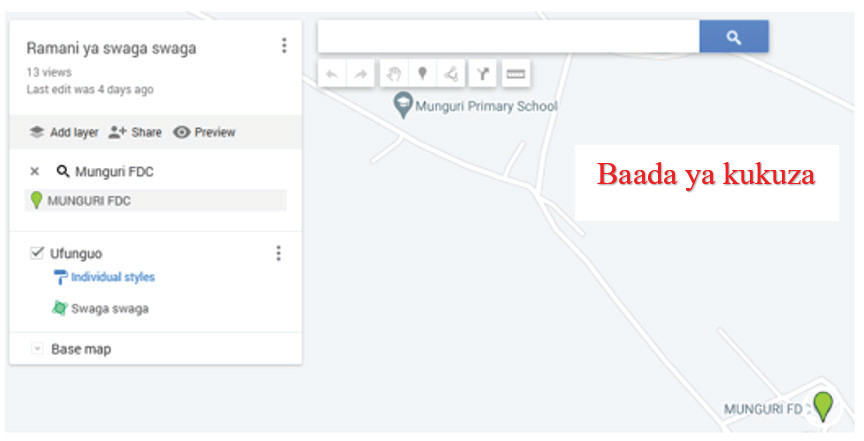

(b)
(d) Ili kupima umbali, chagua alama ya rula kama inavyowasilishwa kwenye Kielelezo namba 24.Alama hii inakuwezesha kupima umbali wa vitu kama barabara, reli na mito, na pia kupima maeneo ya vitu kama misitu, mabwawa, maziwa na mipaka ya utawala.

(e)Kisha, sogeza kishale na bofya kwenye alama ya kwanza (yaani Munguri FDC) (1) na anza kupima umbali kwa kufuata njia kuelekea shule ya msingi Munguri (2), kama inavyowasilishwa kwenye Kielelezo namba 25.Endelea kufuata njia hadi ufika shule ya msingi Munguri.Ukifika shule ya msingi Munguri, bofya mara mbili kumaliza kupima umbali na kuwasilisha umbali.